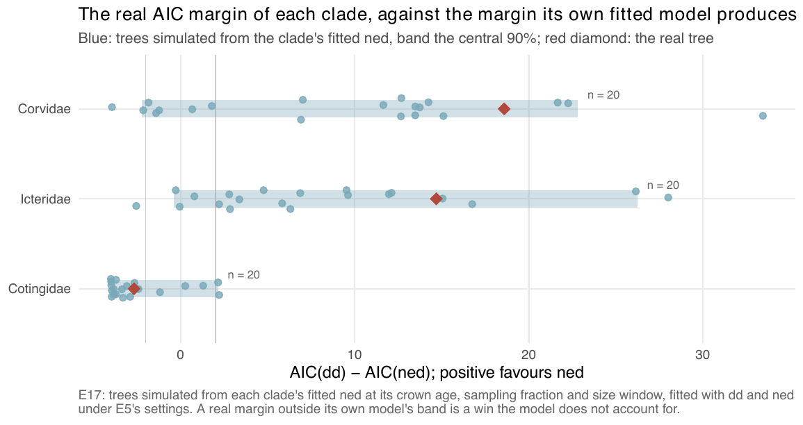

E17 — are the three clades' ned-over-dd margins what the fitted model predicts of itself?
| Status | complete; historical: a method-development step; not a current result (it bootstraps E5's linear-link fits, which E28 replaces); its open question, a bootstrap against an alternative generator, enters E47's design (Estimability) |
| Package build | not recorded; the fitting code is E5's, copied verbatim |
| Driver / analysis | sim/E17-bootstrap.R; figure sim/figures-e15e18.R |
| Data | results/E17/bootstrap.csv (60 rows), results/E17/jobs/ |
Question
On Corvidae and Icteridae E5 found ned beating dd by 18.6 and 14.7 AIC (the design text says "15-19"). A richer model can win on real data by absorbing structure that is not ED. E17 asks whether the real margin is the margin the clade's own fitted ned produces on trees it generates, or something the model does not contain.
Design
| setting | value |
|---|---|
| generator | each clade's fitted ned from E5 (linear link) |
| crown age | the clade's own: Corvidae 30.5, Icteridae 14.5, Cotingidae 24.6 Ma |
| sampling fraction | the clade's own: 0.968, 0.971, 1 |
| size window | 0.6 to 1.6 x the real tip count |
| trees | 20 per clade, 60 in all |
| fits | dd and ned with exactly E5's settings: thinning proposal, 200 draws, max_iter 200, E5's box |
| read-out | AIC(dd) - AIC(ned) per bootstrap tree, against the real value |
This is the only experiment in the study run at real crown ages.
Pre-set rule
The real \(\Delta\)AIC inside the central 90% of the bootstrap distribution means the result is what the fitted model predicts of itself; outside it, the model is winning for a reason it does not contain, and E5 is reported as illustration rather than evidence.
Results
| clade | real AIC(dd) - AIC(ned) | bootstrap 5% | median | 95% | inside | bootstrap selection rate (> 2) | median \(\hat\beta_{ED}/\beta_{fit}\) | median bootstrap tips (real) | median ESS ned (of 200) |
stop |
|---|---|---|---|---|---|---|---|---|---|---|
| Corvidae | +18.6 | -2.2 | 12.2 | 22.8 | yes | 0.65 | 0.95 | 106.5 (120) | 87 | 19 max_iter, 1 clock |
| Icteridae | +14.7 | -0.4 | 6.1 | 26.2 | yes | 0.80 | 1.05 | 80.5 (102) | 123 | 20 max_iter |
| Cotingidae | -2.7 | -4.0 | -3.3 | 2.2 | yes | 0.10 | 0.66 | 56 (65) | 200 | 20 max_iter |
59 of the 60 ned fits ended on the iteration cap, so the selection rates and coefficient ratios are those of unfinished fits. No cell is sampler-limited (lowest median ESS 87).

ned (dots; band, the central 90%). All three diamonds sit inside their bands, the two wins and the loss alike.Conclusion
Met for all three clades: every real margin lies inside the central 90% of its own fitted model's bootstrap distribution. The wins on Corvidae and Icteridae, and the loss on Cotingidae, are what each fitted ned produces on trees of its own kind; the same fitted models win on 65% and 80% of their own trees and on 10% for Cotingidae. The bootstrap trees come out smaller than the real ones (medians 106, 80, 56 against 120, 102, 65), which lowers a margin rather than raising it. What it does not show: that ED is the cause. A model that fits the tree reproduces its own margin by construction; a test against an alternative generator (a K or pendant-age model) was not part of E17. The fits are E5's linear-link fits, which E25 and E28 replace with the exponential-link ladder, where Corvidae's choice is nk, not ned.